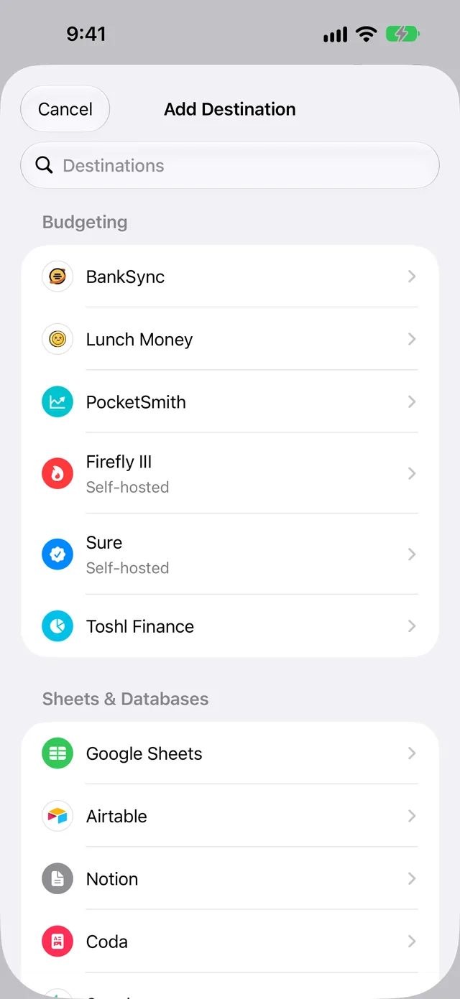
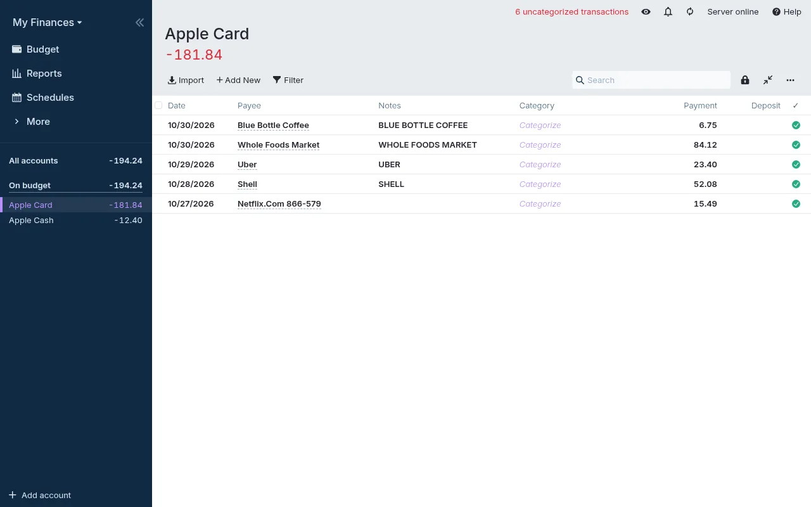

Save Apple Card transactions as OFX files
WalletFeed saves your Apple Card, Apple Cash and Savings transactions from your iPhone in one OFX file for each month. WalletFeed updates the files automatically in a folder that you select. Then you import the files into your app, for example Quicken for Mac or Actual.
Before you start
You must have:
- An iPhone with iOS 26 or a newer version
- WalletFeed, with access to your Apple Card, Apple Cash or Savings account
- WalletFeed Pro (a subscription with a 1-week free trial, or a one-time Lifetime purchase)
- An app that can import OFX files, for example Quicken for Mac, Actual, GnuCash, Moneydance, Banktivity, Goodbudget or YNAB.
If your app is on a computer, you must have a folder that your iPhone and the computer can open, for example in iCloud Drive.
WalletFeed is available only in the US.
Step 1: Add an OFX file in WalletFeed
-
On your iPhone, open WalletFeed.
-
Tap Destinations.
-
Tap + at the top of the screen.

-
In the Destinations search field, type
OFX.
-
Tap OFX File.
If you do not have WalletFeed Pro, the WalletFeed Pro screen opens. After you get WalletFeed Pro, the Files screen opens.
-
Make sure that Format is OFX.

-
Tap Folder.
-
Select a folder in iCloud Drive.
Folder then shows the name of the folder.
-
To use a different name for the files, type the name in Name.
Each file name contains this name, the month and
.ofx. For example, the file for October 2026 isWalletFeed 2026-10.ofx. -
Tap Add.
-
When WalletFeed shows Save Transactions to Files?, tap Save.
The message tells you the data that the folder receives from each posted transaction. This data includes the date, the merchant and the amount. The message also tells you the accounts and the period. If you tap Cancel, WalletFeed removes the new destination.
WalletFeed then writes one file for each month that has posted transactions.
Step 2: Import a file into your app
-
On the computer or iPhone that has your app, open the folder that you selected in Step 1.
-
Find the file for the month, for example
WalletFeed 2026-10.ofx. -
In your app, import the file into the account for your Apple Card.
In Quicken for Mac, Bank or Brokerage File (OFX, QFX) is in File › Import. In Actual, Import is on the page of the account. Actual does not show Import on a phone.
-
Make sure that the transactions are in the correct account.

The ID of each Wallet account is the same in each file. Thus, your app can put the transactions from each file into the same account.
You can import the file for a month again after WalletFeed updates it. Actual, GnuCash and Moneydance use the transaction ID to find each transaction that you imported. These apps do not import a transaction two times.
Data in the file
Each file has one statement for each Wallet account that has posted transactions in the month of the file. A statement shows Apple Card as a credit card, Apple Cash as a checking account and Savings as a savings account. A statement also has the currency code, for example USD, and an ID for the Wallet account.
Each transaction in a statement has this data:
| Data in the file | From Wallet |
|---|---|
| Type | The type of the transaction, for example a purchase, a fee, a payment or a transfer. |
| Posted date | The date when the transaction posted. |
| Transaction date | The date of the transaction in Wallet. |
| Amount | The value of the transaction, for example -23.40. Purchases have a minus sign. Payments and refunds have no minus sign. |
| Transaction ID | The ID of the transaction in Wallet. Apps use it to find each transaction that they imported. |
| Name | The merchant name, or the description if Wallet has no merchant name. The file keeps the first 32 characters. |
| Memo | The description and the card statement text, if they are different from the name. A value in a different currency is also in the memo. |
Each date is the calendar day on your iPhone. The files do not include the account balance.
Changes to the files
While WalletFeed is open, the files receive changes in seconds. When WalletFeed is not open, iOS starts WalletFeed approximately 1 hour or less after a change in Wallet. If Background Sync is on in Settings › Sync, WalletFeed then updates the files.
If Background Sync is off, or if WalletFeed cannot open the folder at that time, the files change at these times:
- When you open WalletFeed
- When an automation starts
- While your iPhone is on a charger.
The files contain only posted transactions. After a pending charge posts, WalletFeed writes it to the file. The posted charge has the same transaction ID as the pending charge. WalletFeed does not write declined charges to the files. A refund has no minus sign.
When a transaction in a month changes, WalletFeed writes all the transactions of that month to the file again. For a month without posted transactions, WalletFeed writes no file. If Wallet removes a transaction, WalletFeed removes it from the file. But if you imported the transaction, it stays in your app.
Send previous transactions
A new OFX destination also receives previous transactions from the start date in Settings › Sync › Initial History. Initial History is All until you change it. With Send History, WalletFeed writes the files again for a period that you select.
- In WalletFeed, tap Destinations.
- Tap WalletFeed, or the name that you typed in Name.
- Tap Send History.
- Tap 30 Days, 90 Days, 1 Year or All.
WalletFeed then writes the file for each month in that period. If your app uses the transaction ID, it does not import a transaction two times.
Change or remove the destination
The destination has the name WalletFeed, or the name that you typed in Name. If you change Name on the screen of the destination, the names of the files do not change.
Send only some transactions
- In Destinations, tap the destination.
- Set the Filter switch to on.
- Set Include, Minimum, Accounts, Categories or Exclude.
Put the files in a different folder
-
In Destinations, tap the destination.
-
Tap Change Folder.
-
Select the new folder.
After you select the folder, WalletFeed writes all the files in the new folder.
Stop the updates to the files
- In Destinations, tap the destination.
- Set the Enabled switch to off.
Remove the destination
-
In Destinations, tap the destination.
-
Tap Delete.
-
Tap Delete again.
The files stay in the folder.
If there is a problem
If WalletFeed shows “Couldn't open this folder.”
WalletFeed cannot open the folder that you selected.
- Tap Folder, or Change Folder on the screen of the destination.
- Select a different folder in iCloud Drive.
If WalletFeed shows “Can't open the folder. Choose it again.”
WalletFeed cannot open the folder that the destination uses.
- In WalletFeed, tap Destinations.
- Tap the destination.
- Tap Change Folder.
- Select the folder again.
If the folder has no OFX file
WalletFeed writes a file only for a month that has posted transactions.
-
In WalletFeed, tap Destinations.
-
Tap the destination.
-
Tap Send Test.
The folder then gets
WalletFeed Test.ofxwith a sample transaction. If this file is in the folder, WalletFeed can write files in the folder. -
Do not import
WalletFeed Test.ofxinto your app. -
To write all your transactions to the files, tap Send History.
-
Tap All.
If a pending charge is not in the file
The files contain only posted transactions.
- After the charge posts in Wallet, import the file for that month again.
If Quicken for Windows does not import the file
Quicken for Windows cannot import the OFX files from WalletFeed. It can import a CSV file only in Quicken's CSV format.
- In WalletFeed, add a CSV File destination.
- Change a copy of the CSV file to Quicken's CSV format (refer to the Quicken guide).
- Import the copy into Quicken for Windows.
If a transaction has a different date in your app
Each transaction in the file has a posted date and a transaction date. Some apps, for example Actual, show the posted date. The posted date can be one or more days after the date in Wallet.
If a transaction that Wallet removed stays in your app
WalletFeed removes the transaction from the file. But if you imported the transaction, your app keeps it.
-
In your app, find the transaction.
-
Delete the transaction.
-
If you import the file for that month again in Actual, clear Reimport deleted transactions.
If you do not clear Reimport deleted transactions, Actual shows the deleted transaction again as a new transaction.
If Apple Cash or Savings transactions are not in the correct account
One file contains the transactions of all the Wallet accounts that WalletFeed reads. Some apps, for example YNAB, put all the transactions from one file into one account. If a file has Apple Card transactions, Actual imports only the Apple Card transactions from it.
-
In WalletFeed, tap Destinations.
-
Tap the destination.
-
Set the Filter switch to on.
-
Tap Accounts.
-
Select one account.
-
Tap the back button at the top of the screen.
-
Tap Send History.
-
Tap All.
-
For each of your other accounts, do Step 1 again with a different name in Name.
-
For each new destination, do steps 1 thru 8 again with a different account in step 5.
Each destination then writes the files for one account only.
-
In your app, import the files of each destination into a different account.
Related
Updated October 30, 2026